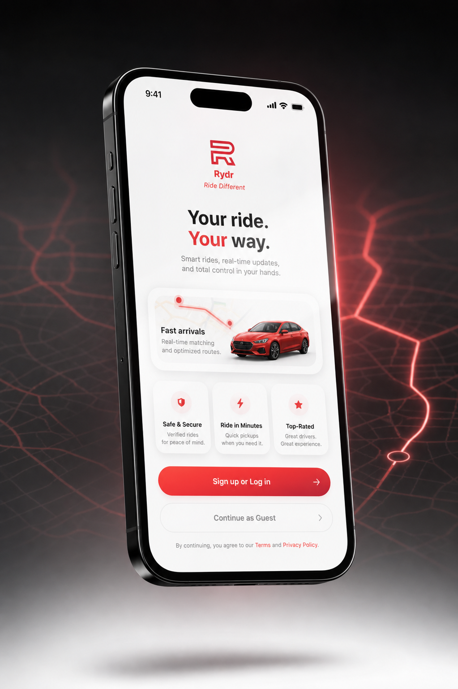
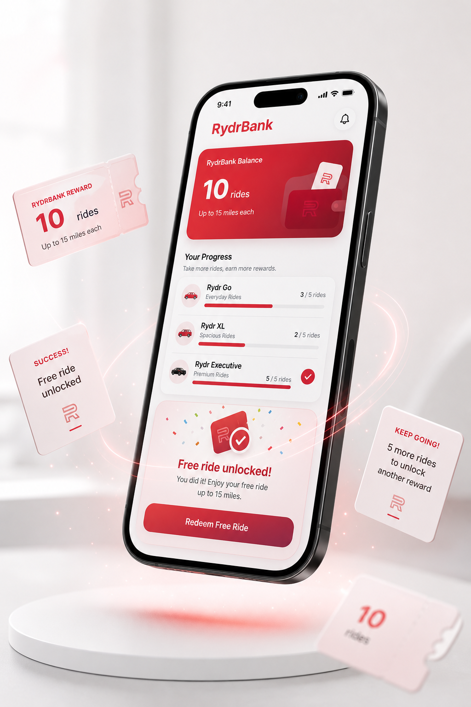
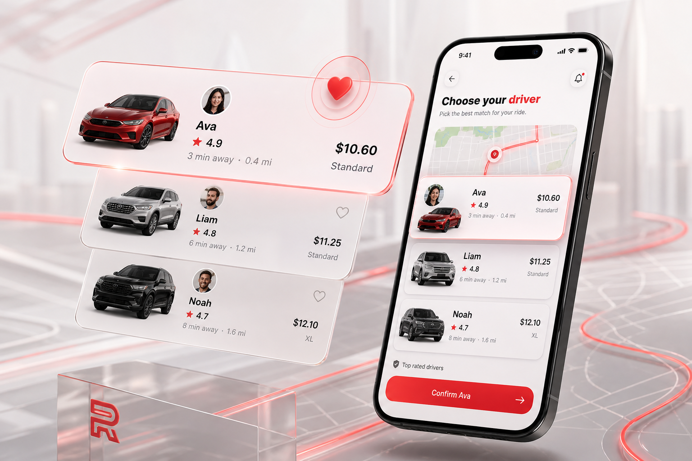
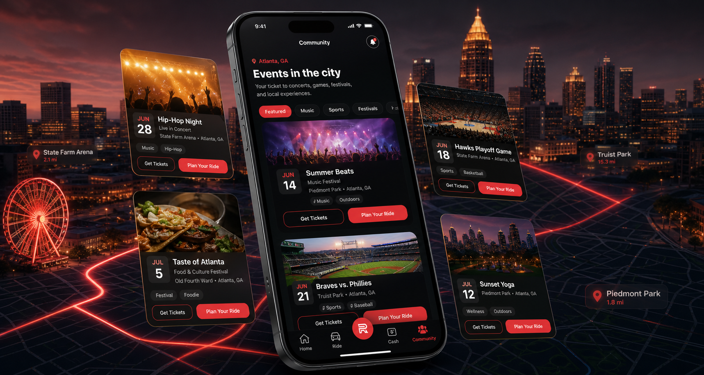
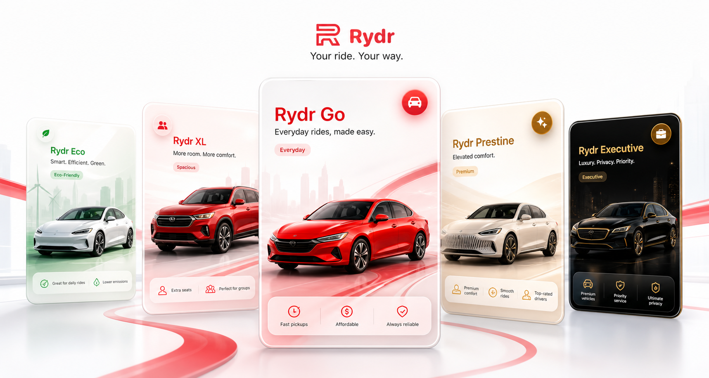
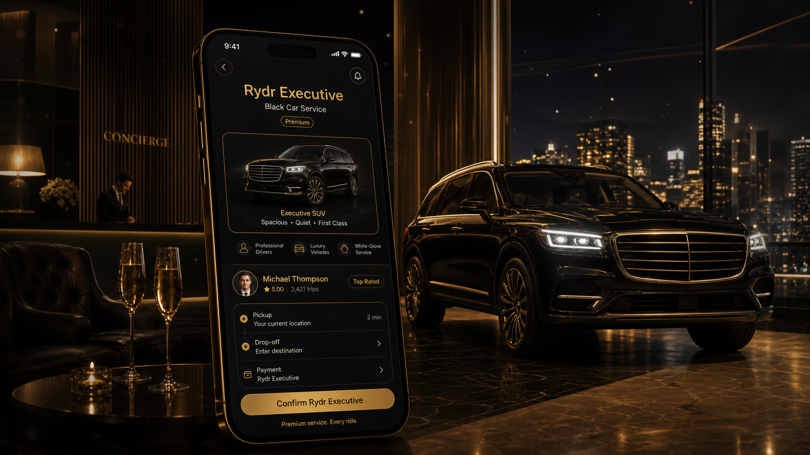

Affordable daily transportation.
Friendly, bright, and built for everyday movement across Atlanta.
Rydr for riders
Rydr offers a different way to get where you're going. Experience transportation built around choice, transparency, and rewards that truly fit the way you ride. Choose the ride that matches the moment, compare nearby drivers before confirming, and travel across Atlanta knowing exactly what you'll pay, without surge pricing changing the story.

Product pillars
Rydr is not just a button to request a car. It is a more considered ride experience where the product gives riders a reason to come back.
RydrBank
RydrBank was designed to reward the rides you already take. Every ride type maintains its own progress, allowing you to earn rewards based on how you actually use the platform. Complete ten rides within the same ride category and unlock one free ride in that category, valid for trips up to fifteen miles. Your everyday rides should earn something meaningful, not just points that never seem to matter.


Driver Choice
Technology influences nearly every decision we make, from the content we see to the services we're offered. Rydr takes a different approach. Because drivers choose their own rates, riders gain something most transportation platforms never offer: meaningful choice. Compare nearby drivers, review their profiles, vehicles, pricing, and arrival times, then decide who you'd feel most comfortable riding with. You're no longer assigned the next available driver. You become part of the decision.
Community
Community begins with helping people discover what's happening around them. Explore concerts, sporting events, festivals, and local experiences throughout Atlanta, purchase tickets, and seamlessly book your ride with Rydr. As the platform grows, Community will evolve into a social space where riders can share recommendations, discuss local events, discover hidden gems, and help shape the future of the Rydr experience together.

Ride types
Each ride type has its own purpose, mood, and reward track. Scroll through the Rydr lineup and choose the experience that fits where you are going.

Friendly, bright, and built for everyday movement across Atlanta.
Electric and hybrid vehicles for riders who want a lighter footprint.
Family trips, airport runs, luggage, groups, and larger vehicles.
Luxury vehicles, premium comfort, and a polished experience that makes the journey memorable.
Rydr Executive
Rydr Executive is the premium lane: black car service, refined vehicles, quiet comfort, polished driver profiles, and the feeling of stepping into an executive lounge before the ride even begins.

Atlanta beta
Rydr is opening access carefully so early riders can experience the product with real support, real feedback loops, and a beta that feels worth waiting for.